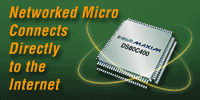

TINI Audio Control |
This demonstration program shows a standard TINIm400 and TINIs400 pair with no modifications being used to serve up a web page and respond to HTTP POST's by playing simple canned audio messages. This example could be a starting point for a full networked public address system. The HTTP server is the standard example server that comes with the TINI Java software development kit. A little native code has been written to wiggle some port pins at 11KHz (sufficient speed for voice audio) that talk to a MAX542 (a 16-bit DAC) which is configured to produce line level output for a pair of amplified computer speakers. |